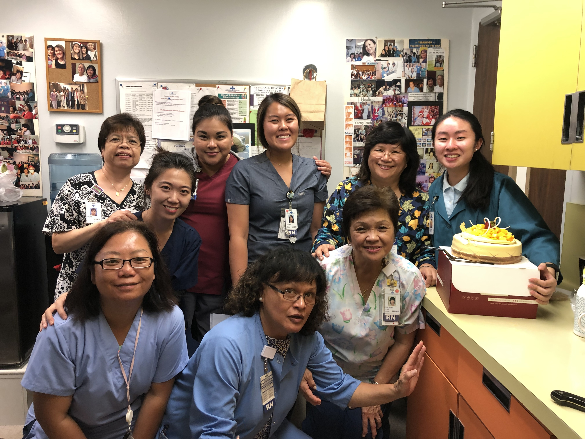
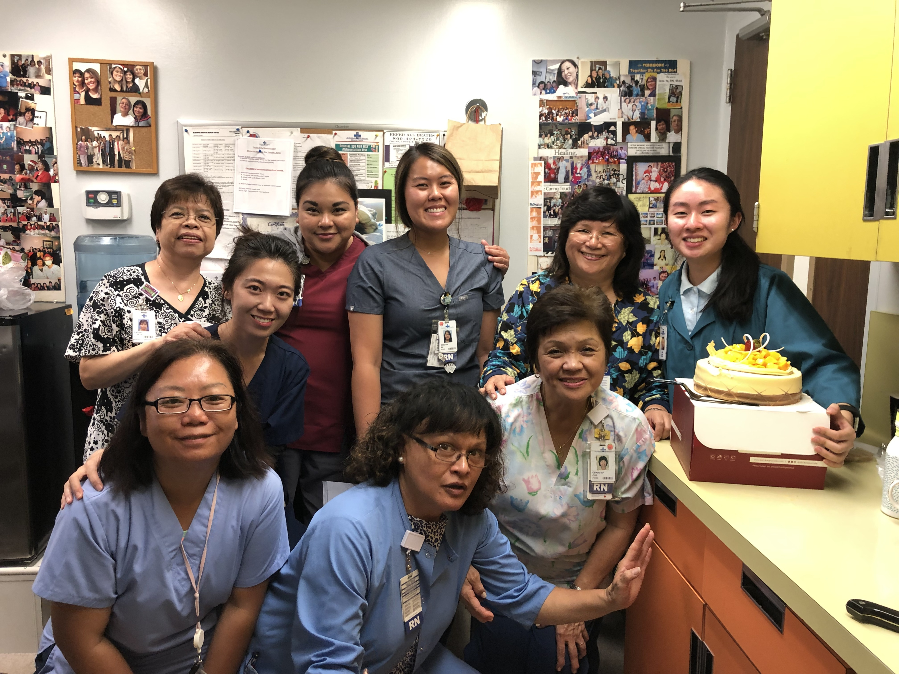
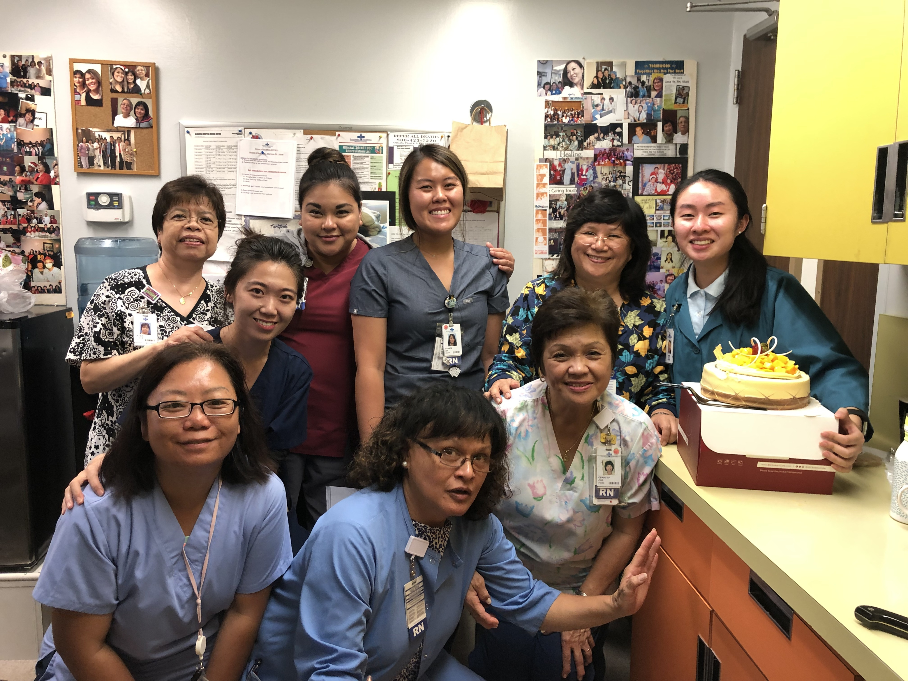

Emily Ta
I am a second year undergraduate student majoring in Biology at UC Riverside. I am involved in multiple organizations on campus based on my personal and career interests. One of the organizations that I am in is the Student Alumni Association. I feel honored to have the opportunity to connect students and alumni. I specifically run and plan the Student Alumni Mentorship Program that helps match our UCR undergrads with mentors who are UCR alumni based on their career interests. Through this experience, I have learned how to improve my time management skills, communication skills, and professional etiquette skills.
Through my first year of college at UCR, I was able to get out of my comfortzone and attend more office hours. I was also able to volunteer in two hospitals near my hometown. During my volunteer opportunities at the hospital, I helped out in an oncology nursing station, outptient nursing station, and main lobby of the hospital. During my time in the outpatient nursing station, I was able to work closely with the nurses and oncology patients. I assisted the needs of the patients by answering their bedroom phones to provide them whatever they needed. Whenever they needed ice water, clean sheets, or their nurse, I would report back to the nurse and obtain the items they needed. I also report to their nurse about any emergencies or conditions that occur. For example, if their IV starts beeping, I would call their nurse right away. I was also given the opportunity to discharge patients when they are healthy and ready to go back home. During my times volunteering for the outpatient station, I had the opportunity to help the nurses translate patients who spoke in Cantonese and Mandarin. I remember there was one patient that was legally blind and it was interesting and heart warming experience trying to assist him. Also, in the outpatient station, I was given the task to show patients an educational video regarding about their surgical procedure. Through this experience, I learned to communicate with patients and nurses.
For the following two years and a half of my undergraduate years, I plan on being more involved on campus and taking on more challenges. I hope to be involved in research team and in an internship.
Experience
Assistant Director of Student Alumni Mentorship Program
• Hand match undergraduate students with alumni based on the student's career interests
• Communicate with alumni to become involved with UCR
• Plan and execute the quarterly program that is open to the entire campus
Oncology Nursing Station Volunteer
• Assist with patients' needs
• Report patient's condition and needs to their specific nurse
• Discharge oncology patients
• Answer in-bed patient phone calls and assist with organizing paperworks
Outpatient Nursing Station Volunteer
• Discharge outpatients
• Educate the patient about their procedure by showing them an animate video
• Assist nurses with their tasks
• Answer hospital phone and organize paperworks
Education
University of California Riverside
Mark Keppel High School
Portfolio
.jpg)
.jpg)
.jpg) 

